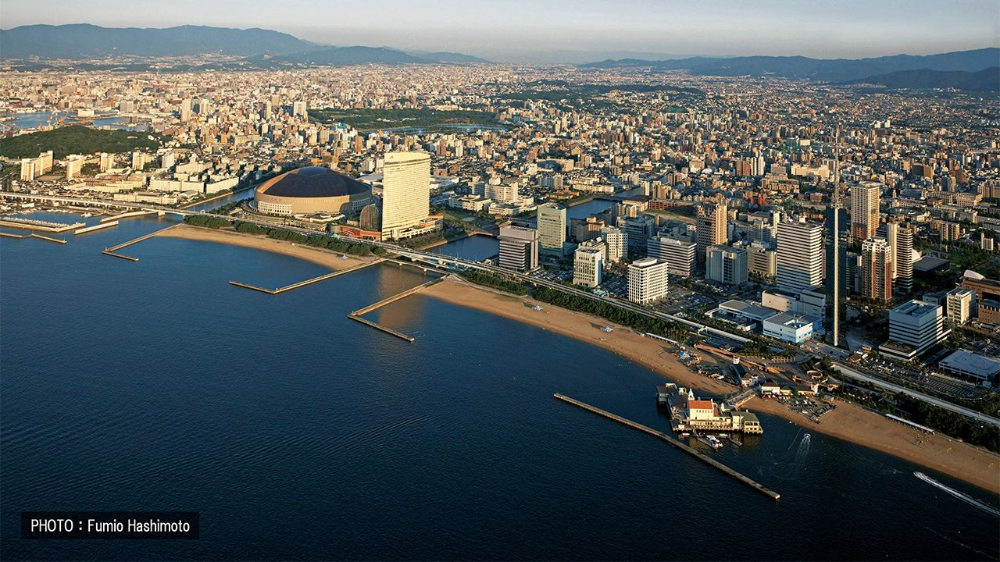

Fukuoka
Fukuoka est le chef-lieu de la préfecture éponyme et également la principale grande ville du Kyushu, quatrième île majeure du Japon, la plus au sud de l'archipel. On y compte près d'1,4 million d'habitants avec un climat doux et un art de vivre apaisant.
Avant 1889, il existait deux villes voisines : Hakata et Fukuoka. Lorsqu'elles ont fusionné, c'est finalement cette dernière qui a pris le pas administrativement. Toutefois, le nom de Hakata est toujours très connu et utilisé, par exemple pour sa gare JR Shinkansen ou encore sa spécialité locale : les Hakata ramen (au porc tonkotsu).
Fukuoka joue un rôle intéressant de porte d'entrée sur Kyushu de par sa situation géographique avantageuse ; depuis mars 2011, sa gare JR Hakata fait office de point de départ du Shinkansen sur l'île.
Pour ne rien gâter, on y trouve un climat très agréable, une grande accessibilité en transports et des quartiers vivants et bien définis, avec la plage en bonus.